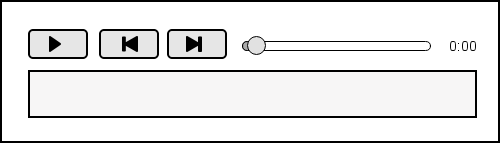
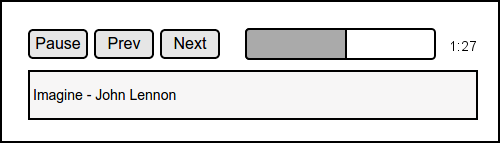

Your task is so write a mock audio player that simulates playing a list of songs.
A list of audio tracks should be provided as a JavaScript array. The duration is provided in seconds, but we'll just use small durations for this assignment.
{% highlight javascript %} var tracks = [ { name: "Imagine", artist: "John Lennon", duration: 15 }, { name: "We are the Champions", artist: "Queen", duration: 20 }, { name: "Hey Jude", artist: "The Beatles", duration: 10 } ]; {% endhighlight %}When the application starts it should immediately start playing the first track.

When playing it should show a pause button,

Feel free to enhance your application with nicer styles or improved functionality.